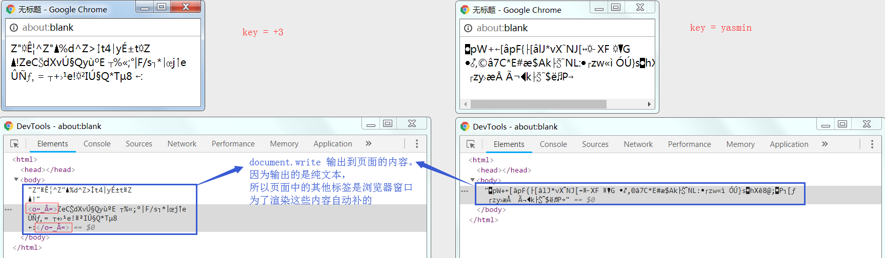

- 来源：Root-Me
- 题型：Web-Client
- 题目：Javascript - Obfuscation 4
- 分数：50 Points
感慨
这题是真的难，我前后花了一周时间。
总的来说，题目只有两个似是而非的提示（解题出来之后才发现这两个提示其实很关键）：
- 提示一在题目说明：需要允许弹窗功能
- 提示二在页面源码：凭耐心和直觉
虽然如此，但其实题目隐藏了很多线索。因此要解题，首先需要知道作者究竟真正想隐藏的是什么。
只有透过现象看本质，抽丝剥茧，方得真相。
源码梳理
开启挑战页面后，要求输入密码，反正不知道，随便输就好，一段法语提示说密码错误。
提取页面源码，发现是一段混淆加密过的 Javascript 代码 ：
<html>
<head>
<meta http-equiv="Content-Type" content="text/html; charset=UTF-8">
<!--
But du jeu: trouver le bon mdp ! Il vous faudra de la patience et de l intuition!
Si vous avez des problèmes, contactez aaSSfxxx sur #root-me
-->
<script>
var ð = "\x71\x11\x24\x59\x8d\x6d\x71\x11\x35\x16\x8c\x6d\x71\x0d\x39\x47\x1f\x36\xf1\x2f\x39\x36\x8e\x3c\x4b\x39\x35\x12\x87\x7c\xa3\x10\x74\x58\x16\xc7\x71\x56\x68\x51\x2c\x8c\x73\x45\x32\x5b\x8c\x2a\xf1\x2f\x3f\x57\x6e\x04\x3d\x16\x75\x67\x16\x4f\x6d\x1c\x6e\x40\x01\x36\x93\x59\x33\x56\x04\x3e\x7b\x3a\x70\x50\x16\x04\x3d\x18\x73\x37\xac\x24\xe1\x56\x62\x5b\x8c\x2a\xf1\x45\x7f\x86\x07\x3e\x63\x47";
function _(x, y) {
return x ^ y;
}
function __(y) {
var z = 0;
for (var i = 0; i < y; i++) {
z += Math.pow(2, i);
}
return z;
}
function ___(y) {
var z = 0;
for (var i = 8 - y; i < 8; i++) {
z += Math.pow(2, i);
}
return z
}
function ____(x, y) {
y = y % 8;
Ï = __(y);
Ï = (x & Ï) << (8 - y);
return (Ï) + (x >> y);
}
function _____(x, y) {
y = y % 8;
Ï = ___(y);
Ï = (x & Ï) >> (8 - y);
return ((Ï) + (x << y)) & 0x00ff;
}
function ______(x, y) {
return _____(x, y)
}
function _______(_________, key) {
________ = "";
________2 = "";
for (var i = 0; i < _________.length; i++) {
c = _________.charCodeAt(i);
if (i != 0) {
t = ________.charCodeAt(i - 1) % 2;
switch (t) {
case 0:
cr = _(c, key.charCodeAt(i % key.length));
break;
case 1:
cr = ______(c, key.charCodeAt(i % key.length));
break;
}
} else {
cr = _(c, key.charCodeAt(i % key.length));
}
________ += String.fromCharCode(cr);
}
return ________;
}
function __________(þ) {
var ŋ = 0;
for (var i = 0; i < þ.length; i++) {
ŋ += þ["charCodeAt"](i)
}
if (ŋ == 8932) {
var ç = window.open("", "", "\x77\x69\x64\x74\x68\x3d\x33\x30\x30\x2c\x68\x65\x69\x67\x68\x74\x3d\x32\x20\x30");
ç.document.write(þ)
} else {
alert("Mauvais mot de passe!")
}
}
__________(_______(ð, prompt("Mot de passe?")));
</script>
</head>
<body>
<link rel='stylesheet' property='stylesheet' id='s' type='text/css' href='/template/s.css' media='all'/>
<iframe id='iframe' src='https://www.root-me.org/?page=externe_header'></iframe>
</body>
</html>
因为这段混淆代码真的很难看，我稍微替换了变量名和方法名，整理成如下代码：
function xor(x, y) {
return x ^ y;
}
function powsum1(y) {
var sum = 0;
for (var i = 0; i < y; i++) {
sum += Math.pow(2, i);
}
return sum;
}
function powsum2(y) {
var sum = 0;
for (var i = 8 - y; i < 8; i++) {
sum += Math.pow(2, i);
}
return sum;
}
function bit1(x, y) {
y = y % 8;
ps = powsum1(y);
ps = (x & ps) << (8 - y);
return (ps) + (x >> y);
}
function bit2(x, y) {
y = y % 8;
ps = powsum2(y);
ps = (x & ps) >> (8 - y);
return ((ps) + (x << y)) & 0x00ff;
}
function bit(x, y) {
return bit2(x, y)
}
function encrypy(salt, key) {
pwd = "";
unuse = "";
for (var i = 0; i < salt.length; i++) {
c = salt.charCodeAt(i);
if (i != 0) {
switch (pwd.charCodeAt(i - 1) % 2) {
case 0:
n = xor(c, key.charCodeAt(i % key.length));
break;
case 1:
n = bit(c, key.charCodeAt(i % key.length));
break;
}
} else {
n = xor(c, key.charCodeAt(i % key.length));
}
pwd += String.fromCharCode(n);
}
return pwd;
}
function check(pwd) {
var checksum = 0;
for (var i = 0; i < pwd.length; i++) {
checksum += pwd["charCodeAt"](i)
}
if (checksum == 8932) {
var win = window.open("", "", "width=300, height=20"); // 这里对原本的十六进制字符做了解码
win.document.write(pwd)
} else {
alert("Mauvais mot de passe: " + checksum)
}
}
var salt = "\x71\x11\x24\x59\x8d\x6d\x71\x11\x35\x16\x8c\x6d\x71\x0d\x39\x47\x1f\x36\xf1\x2f\x39\x36\x8e\x3c\x4b\x39\x35\x12\x87\x7c\xa3\x10\x74\x58\x16\xc7\x71\x56\x68\x51\x2c\x8c\x73\x45\x32\x5b\x8c\x2a\xf1\x2f\x3f\x57\x6e\x04\x3d\x16\x75\x67\x16\x4f\x6d\x1c\x6e\x40\x01\x36\x93\x59\x33\x56\x04\x3e\x7b\x3a\x70\x50\x16\x04\x3d\x18\x73\x37\xac\x24\xe1\x56\x62\x5b\x8c\x2a\xf1\x45\x7f\x86\x07\x3e\x63\x47"
var key = prompt("Mot de passe?")
var pwd = encrypy(salt, key)
check(pwd);在这里我对 window.open() 的十六进制串做了解码，还原出来就是 width=300, height=20 。
关于 window.open() 函数这里暂且先不管，后面会着重说明。
而 salt 的十六进制串因为解码出来还是乱码，所以这里就先保持原样不动。
整理后的代码已经大致可以了解逻辑功能了。
但为了方便调试，我又用 python 重写了一遍，并加了注释：
# 异或运算
# 存在逆运算：若 z = xor(x, y) ，则 y = xor(x, z)
def xor(x, y) :
return x ^ y
# 指数求和（除0外结果总是奇数）
# 由于 y 的取值范围只能是 [0, 8), 因此返回值只有 8 种可能：
# 1 => 1
# 2 => 3
# 3 => 7
# 4 => 15
# 5 => 31
# 6 => 63
# 7 => 127
def powsum1(y) :
sum = 0
for i in range(0, y) :
sum += pow(2, i)
return sum
# 指数求和（结果总是偶数）
# 由于 y 的取值范围只能是 [0, 8), 因此返回值只有 8 种可能：
# 0 => 0
# 1 => 128
# 2 => 192
# 3 => 224
# 4 => 240
# 5 => 248
# 6 => 252
# 7 => 254
def powsum2(y) :
sum = 0
for i in range(8 - y, 8) :
sum += pow(2, i)
return sum
# 执行一些位运算（此函数并没有被调用）
# 但因为 powsum1 的缘故，当 x 固定的时候，结果只会是某 8 个固定的 ASCII 码
# 导致输入与输出不是一一映射关系，因此 bit1 不可能存在逆运算
#
# 另外当 x 固定的时候，无论 y 为何值，均有 bit1(x, y) == bit2(x, 8 - y)
def bit1(x, y) :
y = y % 8
ps = powsum1(y)
ps = (x & ps) << (8 - y)
return ps + (x >> y)
# 执行一些位运算
# 但因为 powsum2 的缘故，当 x 固定的时候，结果只会是某 8 个固定的 ASCII 码
# 导致输入与输出不是一一映射关系，因此 bit2 不可能存在逆运算
#
# 另外当 x 固定的时候，无论 y 为何值，均有 bit2(x, y) == bit1(x, 8 - y)
def bit2(x, y) :
y = y % 8
ps = powsum2(y)
ps = (x & ps) >> (8 - y)
return (ps + (x << y)) & 0x00ff
# 执行一些位运算
def bit(x, y) :
return bit2(x, y) # bit1(x, y) == bit2(x, 8 - y)
# 使用输入串 key 对盐 salt 循环加密，得到加密串 pwd
def encrypt(salt, key) :
pwd = ''
key_len = len(key)
if key_len > 0 :
for i, c in enumerate(salt) :
x = ord(c)
y = ord(key[i % key_len])
if i > 0 and ord(pwd[i - 1]) % 2 != 0 :
y = y % 8
z = bit(x, y)
else :
z = xor(x, y)
pwd += chr(z)
return pwd
# 检查加密串 pwd 的校验和
# 当校验和为 8932 时，把 pwd 的内容输出到弹出窗口
def check(key, pwd) :
checksum = 0
for c in pwd :
checksum += ord(c) # 校验和
flag = (checksum == 8932)
if flag :
# 原 js 代码：
# var win = window.open("", "", "width=300, height=20")
# win.document.write(pwd)
pass
print('%s(%i): \n\tkey=%s\n\tpwd=%s' % ('Bingo' if flag else 'Fail', checksum, key, pwd))
return flag
if __name__ == '__main__' :
salt = "\x71\x11\x24\x59\x8d\x6d\x71\x11\x35\x16\x8c\x6d\x71\x0d\x39\x47\x1f\x36\xf1\x2f\x39\x36\x8e\x3c\x4b\x39\x35\x12\x87\x7c\xa3\x10\x74\x58\x16\xc7\x71\x56\x68\x51\x2c\x8c\x73\x45\x32\x5b\x8c\x2a\xf1\x2f\x3f\x57\x6e\x04\x3d\x16\x75\x67\x16\x4f\x6d\x1c\x6e\x40\x01\x36\x93\x59\x33\x56\x04\x3e\x7b\x3a\x70\x50\x16\x04\x3d\x18\x73\x37\xac\x24\xe1\x56\x62\x5b\x8c\x2a\xf1\x45\x7f\x86\x07\x3e\x63\x47";
key = "" # 输入串
pwd = encrypt(salt, key)
check(key, pwd);针对 python 的每个函数我做了一些单元测试，大致归纳出每个函数的作用（过程略，有兴趣的同学可以自己测试）。
为了方便后面结合分析，我对这三份处理过的代码的每个函数名做了个映射关系表格，并附带了说明：
| 混淆 JS 函数/变量 | 美化 JS 函数/变量 | 重构 Python 函数/变量 | 说明 |
|---|---|---|---|
| _(x, y) | xor(x, y) | xor(x, y) | 异或运算（存在逆运算） 若 z = xor(x, y) ， 则 y = xor(x, z) |
| __(y) | powsum1(y) | powsum1(y) | 指数求和（被 bit1 调用） y 取值范围为 [0, 8)]，对应输出固定为 0, 1, 3, 7, 15, 31, 63, 127 |
| ___(y) | powsum2(y) | powsum2(y) | 指数求和（被 bit2 调用） y 取值范围为 [0, 8)]，对应输出固定为 0, 128, 192, 224, 240, 248, 252, 254 |
| ____(x, y) | bit1(x, y) | bit1(x, y) | 执行一些位运算（此函数并没有被调用） 甚至从某种意义上看 bit1 与 bit2 是等价的 其存在只是混淆视听，误认为是 bit2 的逆运算 |
| _____(x, y) | bit2(x, y) | bit2(x, y) | 执行一些位运算（不存在逆运算） 当 x 固定的时候，无论 y 为何值 结果只会是某 8 个固定 ASCII 码的其中之一 且均有 bit2(x, y) == bit1(x, 8 - y) |
| ______(x, y) | bit(x, y) | bit(x, y) | 无任何作用 此函数只是简单调用 bit2 而已 |
| _______(ð, key) | encrypt(salt, key) | encrypt(salt, key) | 使用输入串 key 对盐 salt 循环加密 得到加密串 pwd |
| __________(þ) | check(pwd) | check(key, pwd) | 检查加密串 pwd 每个字符的 ASCII 码之和 是否等于 8932，若是在则弹出式窗口中 打印 pwd 的内容 |
| ð | salt | salt | 盐（固定值，十六进制串） |
| key | key | key | 输入字符串（本题需要推导的最终 flag） |
| þ | pwd | pwd | salt 与 key 加密得到的字符串 若其 ASCII 码的校验和等于 8932 则会触发弹窗事件并将其打印出来 |
背景分析
到这里为止，整个代码在做什么，以及出题人希望我们做什么，似乎已经是很清晰了。
简单来说，就是 给定一个盐 salt ，然后要求输入一个密钥 key ， 通过某种算法使用 salt 对 key 加密得到密码 pwd 。
但是因为某种原因，密钥 key 遗失了， 密码 pwd 也忘记了。期望可以通过某种途径找回 key
目前只知道的线索有：
- 加密算法的逻辑
- 盐
salt - 密码
pwd的校验和
初步分析
首先需要明确的是，因为有无数种组合，所以要通过校验和反推密码 pwd 本身是不可能的。
因此校验和只能作为我们是否找到了 key 的判断依据之一。
另外就算已知加密算法的逻辑，也无法写出对应的解密算法，究其原因就是 bit 函数是不可逆的。
密码爆破
通过前面分析，我凭第一直觉想到的解题方法就是密码爆破：不断枚举输入 key 值，然后测试其输出 pwd 值的校验和是否等于 8932 ，只要命中则认为找到了目标 key 。
于是我选择了两种爆破方式：
- 以 ASCII 表作为
key的每个字符范围进行枚举，令key的长度依次为 1 个字符、2个字符、3个字符…. - 枚举从 darkweb 统计出来的 Top 10000 的弱密码作为
key（密码表可在 SecList 下载）
利用前面重构出来的 python 代码，可以很容易就实现爆破测试，这里就不贴爆破代码了，直接说结果。
通过爆破我找到了两个符合条件的 key 值： +3 和 yasmin
但是很遗憾，这两个 key 值虽然可以使得 pwd 的校验和为 8932 ，但提交后发现并不是真正的 pwd 。
看来事情并没有想象中简单。
我认真地分析 encrypt(salt, key) 函数，又发现一件事情：
key 的每个字符一直在通过 取模运算，循环 地对 salt 的每个字符依次执行某个操作（xor 或 bit）
亦即前面得到的两个 key 值，只要通过循环，就可以衍生出更多符合校验和条件的 key 值，例如：
+3 、 +3+3 、 +3+3+3 、 yasmin 、 yasminyasmin 、 yasminyasminyasmin、……
显然不可能有这么多正确答案，换言之爆破不是正确的解题思路。
进一步分析
仔细观察 encrypt(salt, key) 函数的行为，与其说这是 salt 把 key 加密成 pwd 的过程，
倒不如说这是通过 key 把密码 salt 还原成明文 pwd 的过程 ： encrypt 实际上应该是一个解密函数！
据此我调整了一下这部分代码：
pwd=>plaintextsalt=>pwdencrypt(salt, key)=>decrypt(pwd, key)
# 使用输入串 key 对密文 pwd 循环解密，得到明文 plaintext
def decrypt(pwd, key) :
plaintext = ''
key_len = len(key)
if key_len > 0 :
for i, c in enumerate(pwd) :
x = ord(c)
y = ord(key[i % key_len])
if i > 0 and ord(plaintext[i - 1]) % 2 != 0 :
y = y % 8
z = bit(x, y)
else :
z = xor(x, y)
plaintext += chr(z)
return plaintext
# 检查明文 plaintext 的校验和
# 当校验和为 8932 时，把 plaintext 的内容输出到弹出窗口
def check(key, plaintext) :
checksum = 0
for c in plaintext :
checksum += ord(c) # 校验和
flag = (checksum == 8932)
if flag :
# 原 js 代码：
# var win = window.open("", "", "width=300, height=20")
# win.document.write(pwd)
pass
print('%s(%i): \n\tkey=%s\n\tplaintext=%s' % ('Bingo' if flag else 'Fail', checksum, key, plaintext))
return flag
if __name__ == '__main__' :
pwd = "\x71\x11\x24\x59\x8d\x6d\x71\x11\x35\x16\x8c\x6d\x71\x0d\x39\x47\x1f\x36\xf1\x2f\x39\x36\x8e\x3c\x4b\x39\x35\x12\x87\x7c\xa3\x10\x74\x58\x16\xc7\x71\x56\x68\x51\x2c\x8c\x73\x45\x32\x5b\x8c\x2a\xf1\x2f\x3f\x57\x6e\x04\x3d\x16\x75\x67\x16\x4f\x6d\x1c\x6e\x40\x01\x36\x93\x59\x33\x56\x04\x3e\x7b\x3a\x70\x50\x16\x04\x3d\x18\x73\x37\xac\x24\xe1\x56\x62\x5b\x8c\x2a\xf1\x45\x7f\x86\x07\x3e\x63\x47";
key = "" # 输入串
plaintext = decrypt(pwd, key)
check(key, plaintext);调整思路
调整代码后，整段代码的功能就更切合正常思路了：
**有一密文 pwd ， 需要找到其加密密钥 key 解密成明文 plaintext，若解密成功则把 plaintext 输出到一个弹窗**。
为什么是弹窗
在这里，我注意到一个问题，而且整个挑战也只有这个唯一提示：
NB : You will have to enable popups in order to solve this challenge!
就是说我要开启浏览器弹窗功能才能解决这个挑战。
为什么不用 alert ？为什么是弹窗？为什么弹窗会成为提示要点？
我把代码重构成 python 时，直观上认为弹窗只不过是输出结果的方式而已，就一直忽略了弹窗函数的作用。
但既然提示指出了弹窗的必要性，可能在其中会隐含了什么。
if (checksum == 8932) {
var win = window.open("", "", "width=300, height=20");
win.document.write(pwd)
} else {
alert("Mauvais mot de passe: " + checksum)
} 在这段弹窗代码中，用到了两个 js 函数，从 W3School 查到其 API 说明如下：
window.open(URL,name,features,replace)：用于打开一个新的浏览器窗口或查找一个已命名的窗口document.write(exp1,exp2,exp3,....)：可向页面写入 HTML 表达式或 JavaScript 代码
其中 window.open 的参数说明为 ：
○ URL：可选，声明了要在新窗口中显示的页面的 URL。
如果省略了这个参数，或者它的值是空字符串，那么新窗口就不会显示任何页面内容
○ name：可选，声明了新窗口的名称
○ features：可选，声明了新窗口要显示的标准浏览器的特征
○ replace：可选，本题代码中并没有使用这个参数
为了测试弹窗的效果，我把前面爆破得到的两个 key 值 +3 和 yasmin 分别输入到挑战页面。
因为这两个值校验和均为 8932 ，所以必定会触发弹窗。

使用浏览器的开发者工具查看弹窗源码，我发现几件很有意思的事情：
- 弹窗显示了意义不明的乱码内容，而且为了显示乱码内容，弹窗自动添加了 <html> 等标签（因为使用 python 运行时，并没有输出这些标签，而且
window.open的 URL 为空，即页面本身不会有任何内容，所以我肯定这些标签是弹窗自动加的，与window.open和document.write无关） - 不同的
key值得到输出到弹窗的内容不同（意味着很可能有一个key会使得内容变成明文） - 当
key值为+3时，不难发现乱码中有一对闭合标签<o _Â=>
尤其是最后一点，乱码的闭合标签 ，给了我很大的启示：
大胆猜测
既然 window.open 开启了一个完全空白的窗口， document.write 又往里面写 plaintext ，
那会不会 plaintext 的内容就是页面源码？
而且会不会 plaintext 就是包含完整 html 标签的页面源码？
虽然还不知道 plaintext 的全部内容，但如果是包含完整 html 标签的页面源码，那第一个字符很有可能就是 < ！
更甚者， plaintext 前几个字符很有可能就是 <html> ！
验证猜测
虽然是全凭直觉的猜测，但要验证它也并不是什么复杂的事情。
验证的思路很简单，逐个字符验证就可以了：
现在已知密文 pwd 的每一个字符和 decrypt 的代码逻辑，又知道 plaintext 的前几个字符（虽然只是猜测），
那么只需要逆向计算 key 的每一个字符，只要都不是乱码字符，就说明猜测正确，同时也能推算出 key 的值。
逆推
从 decrypt 逻辑可知：
plaintext[0] = xor( pwd[0], key[0] ) ，现已知 pwd[0] = '\x71'，plaintext[0] = '<' ，
因为 xor 的逆运算就是其自身，因此有 key[0] = xor( pwd[0], plaintext[0] ) = 'M' 。
又从 decrypt 逻辑可知：
第 i 个字符使用 xor 还是 bit 方法，取决于 plaintext[i-1] 的 ASCII 码是奇是偶，
因为 plaintext[0] = '<' 其 ASCII 码是偶数， 所以 plaintext[1] 依旧使用 xor 方法逆推，
已知 pwd[1] = '\x11'，plaintext[1] = 'h'，因此有 key[1] = xor( pwd[1], plaintext[1] ) = 'y' 。
根据上述规律，整理出前几个字符的逆推表如下：
| 字符索引 : i | 0 | 1 | 2 | 3 | 4 | 5 | 6 | …… |
|---|---|---|---|---|---|---|---|---|
| pwd[i] | \x71 | \x11 | \x24 | \x59 | \x8d | \x6d | \x71 | …… |
| plaintext[i-1] | - | 偶 | 偶 | 偶 | 奇 | 偶 | 偶 | …… |
| plaintext[i] | < | h | t | m | l | > | < | …… |
| 逆运算 | xor | xor | xor | xor | bit（无逆运算） | xor | xor | …… |
| key[i] | M | y | P | 4 | ?（未知） | S | M | …… |
不难注意到，pwd[0] == pwd[6] == '\x71' ，因此很可能也有 plaintext[0] == plaintext[6] == '<'，
反推得到 key[0] == key[6] == 'M' ，也就是说，key 的字符开始重复了。
通过前面做爆破时的思路可以，这可能就是 key 的取模循环点，换言之 key 应该只有 6 个字符：MyP4?S
Bingo
现在的问题在于，第 4 个字符 ? 是什么。
因为从代码可知 bit 是不存在逆运算的，亦即虽然我们已知 pwd[4] == '\x8d'，
且 plaintext[4] = bit( pwd[4], key[4] ) = 'l' ，但是从算术上无法逆推 key[4] 值。
既然无法逆推，那么顺序爆破就好了：
通过枚举 key[4] 的 ASCII 码值（也就256次），记录所有使得 bit( pwd[4], key[4] ) = 'l' 的 key[4] 值，
于是我得到了这 12 个字符均是满足条件的： # + 3 ; C K S [ c k s {
逐个代入到 ? 在挑战页面校验，最终发现只有 MyP4sS 会使得弹窗内容完全变成明文，即是真正的 key，完成挑战。
（其实 ? 不用爆破也能猜到不是 s 就是 S，因为很明显 MyP4sS 就是 MyPASS 的变体）
在最后，我在 python 代码输入 key = MyP4sS ，还原出真正的 plaintext 内容为：
<html><head><title>Victoire!</title></head><body>Vous pouvez entrer ce mot de passe!</body></html>
说明前面的猜测是正确。
答案下载
flag 下载后的 flagzip 的文件需要手动更改后缀为
*.zip，然后解压即可（为了避免直接刷答案）